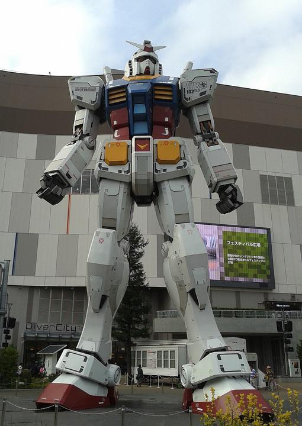

Devil Gundam
About me
The Devil Gundam - originally called the Ultimate Gundam - was a unique mesh of technological and organic science, created by Dr. Kasshu to be used as a vessel for the three theoretical abilities: self-recovery, self-replication, and self-evolution. In essence, it was a Gundam that could independently maintain and improve itself; Dr. Kasshu hoped that its abilities could later be transferred to humans, physically improving and evolving the human body to be free of illness and disease.